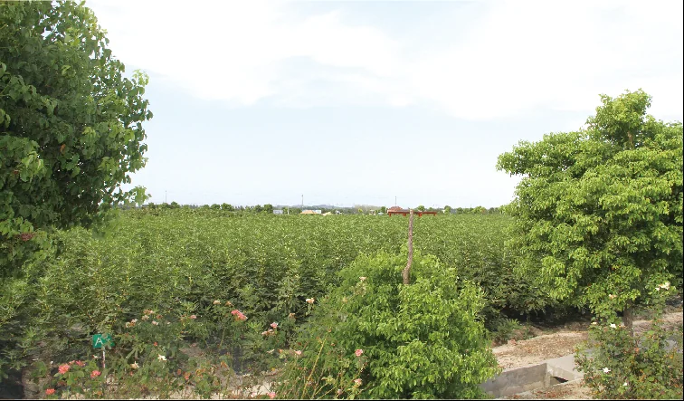
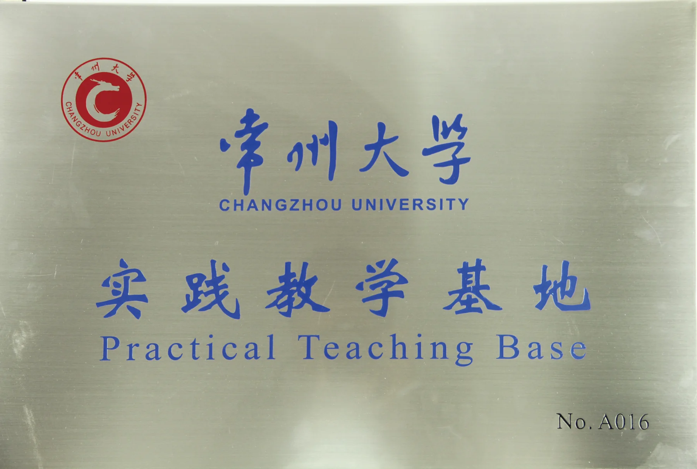

种植基地
建设无花果、黑米、紫薯、桂花等原料基地。
Planting Base & Research Cooperation
怡泰持续积累原料种植、食品研发、项目合作与产品转化能力，为植物饮品、谷物食品和未来产品研发提供长期支持。

Professional Overview
建设无花果、黑米、紫薯、桂花等原料基地。
采用公司、基地与标准化相结合的生产管理模式。
与高校和科研机构开展研发、试验和技术交流。
Planting Base
怡泰食品建设原料种植基地，种植无花果、黑米、紫薯、桂花等作物，并采用“公司 + 基地 + 标准化”的生产管理模式，关注原料种植、加工与追溯控制。
通过基地建设，怡泰希望从源头提升原料稳定性，为植物饮品、谷物食品和未来产品研发提供长期支持。
Research Cooperation
怡泰食品长期与高校和科研机构开展食品研发、项目合作与技术交流，曾与中国科学技术大学苏州研究院、镇江农科所、江南大学食品学院、江苏省农业科学院、常州大学食品系等单位合作开发科技项目。
公司还与常州大学食品系合作建立试验基地和实习基地，持续提升研发、检测和产品转化能力。
